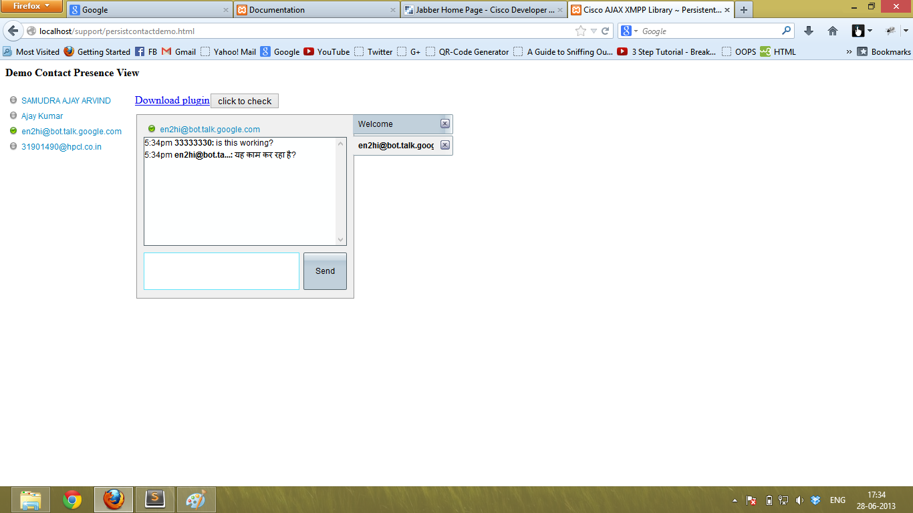
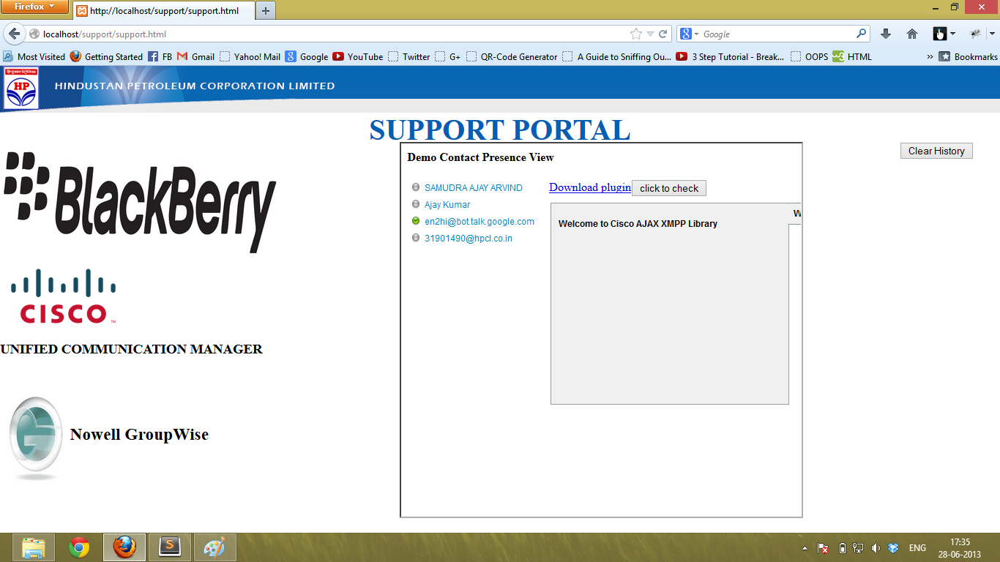

1. ON-PREMISE CHAT-CLIENT
- Setting up the local server on PC to enjoy the frequent and easy testing of the changes.
(HIGHLY RECOMMENDED) - -If you feel that you can manage and test the components by directly accessing them in browser then you can skip this step.
- We need XAMPP for the purpose of setting up the local server.
- You can download and install the installer version as per your OS by simply following the installation guide.(Recommended Microsoft Windows XP,7,8 or later)
- After you have successfully installed the XAMPP server, go to the C: Drive and in xampp folder, open the xampp-control
It will open the XAMPP controller infront of you, make sure to start the apache and mysql services everytime before testing. - Now, in the same xampp folder, enter into folder htdocs, here make a folder according to your needs, and put all the Web files in it.
And then you can access you xampp in browser by opening, link, "localhost/[newFolderName]" or "127.0.0.1/[newFolderName]"
Note: Clicking above links will take you to the xampp default page in htdocs/xampp folder which is "index.html"
Now, you have successfully made your PC a localserver, which can be accessed locally or by any other PC connected in LAN(Local Network) by just putting the IP of the PC.
Resource: How to get the IP Address of your PC
go to top -
For testing the APIs and working on them.
- Download the Cisco AJAX XMPP Library (aka CAXL)
-
Extract all the files to a new Folder in htdocs, or anywhere(if not using XAMPP).
And Access all the files by going to the same link of "localhost/[newFolder]" - Some basic changes to run the files successfully on HPCL server.
-
For making basic-chat-demo to work, go to the code of basic-chat.html by opening it in any text editor. (Sublime Editor Download link provided)
And make the following 2 changes to the "var demo_config" in javascript.
I. Change domain from "psdtemea.cisco.com" to "hpcl.co.in"
II. Change httpBindingURL from "http://cup02:7335/httpbinding" to "https://10.15.0.10:7335/httpbinding"
Please open this link and accept the certificate and add it to the browser(Recommended Firefox).
go to top
-
For making basic-chat-demo to work, go to the code of basic-chat.html by opening it in any text editor. (Sublime Editor Download link provided)
-
For Voice and Video APIs:
- Download the APIs as per the instructions given on this page and extract into a new folder in htdocs of xampp.
- Cisco Web Communicator is the installer which connects laptop devices to the Web Page of Cisco APIs.
-
Now, in the folder extracted, go to the sample folder and open the sample.html in firefox.
This will open the Voice and Video support of Cisco Jabber.
Username and Password must be of hpcl.co.in domain.
In CUCM field, Enter: 10.15.0.7.
Choose phone Mode according to your needs.
In CUP or WebEx Domain, Enter: 10.15.0.10
In http Binding URL, Enter: https://10.15.0.10:7335/httpbinding
Choose the option in phones, if phone mode is SoftPhone and connect, then the make call button gets activated.
Call and ENJOY !!!
go to top
2. SUPPORT PORTAL
- If you have reached this file, means you already have the Support Folder, but then too a zip file is provided.
- Extract the files to a new folder in htdocs of xampp.
-
PersistContactDemo is the file which contains the hard coded domain, CUP server IP,
Username and password for initiating a client with connection to the server for the communication purposes.
It contains the contactContainer which uses temprory JIDs to be added to the chat Client for Help Desk which are
Hard Coded for once, which can be manipulated by accessing Database using PHP/mySQL or any other tool.
-
The main UI of the support Page is in the file support.html.
This has the UI based on portal, integrating three various options to ask help for and get a live chat with the support team.
This also has a "form" element, which in turn exectes the html code of persistContactDemo page.
Right now the chat-box is initiated automatically, but it will be modified soon to answer to the clicks on the specific options.
go to top
Note: The jabberwerx.js and jabberwerx.ui.js are a bit different from the ones provided in the other folders,
because the refrencing of EMOTICONS, style.css, RESOURCES, have been changed.
In jabberwerx.ui,
line 28140, 27259, 30267 have been modified accordingly to fit the refrencing as per the needs.
go to top
go to top
go to top
Things to keep in mind:
1. Please always after configuring the proxy in firefox, add 10.0.0.0/8 to bypass the proxy.
This will in turn allow you to access, https://10.15.0.10:7335/httpbinding.
2. Always check if the https://10.15.0.10:7335/httpbinding URL is working in the browser.
3. The persistContactDemo doesn't allow to refresh the page for now, but it gives an alert if you refresh the page,
For removing this bug, you will have to clear the history.
this is the connected client
this is the chat initiated with bot
this is the connected working support page